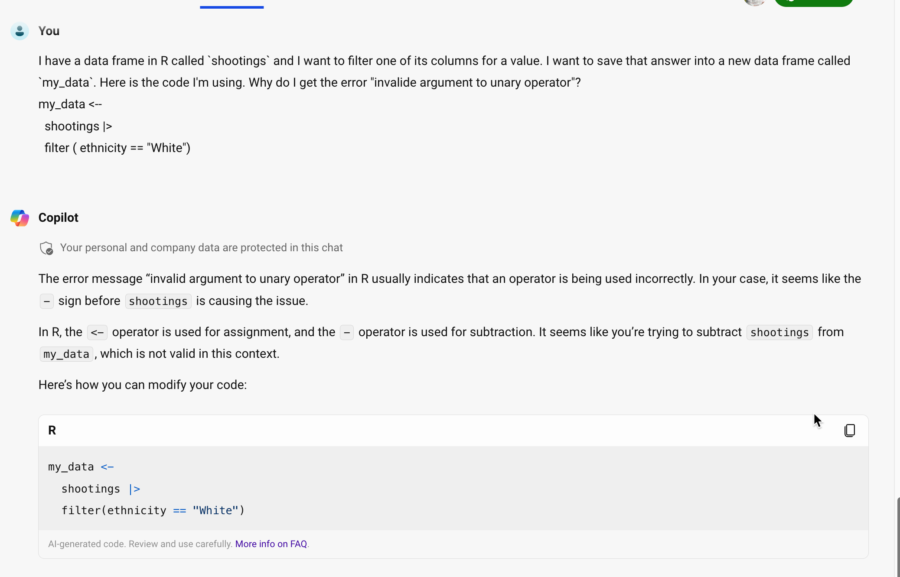
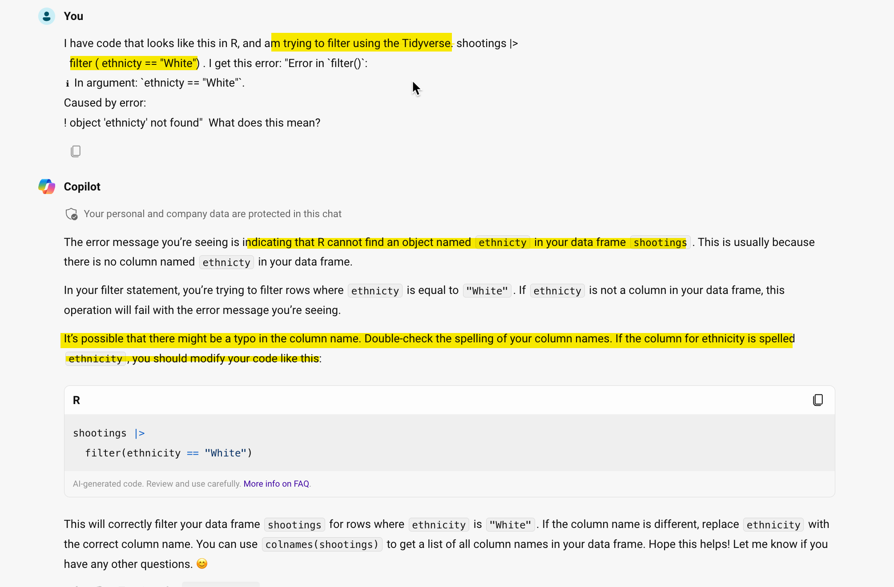

my_data <--
shootings |>
filter ( ethnicity == "White")Error in FUN(left): invalid argument to unary operatorThis final chapter on data wrangling in R simply puts together a lot of the code snippets that are easy to forget, and adds some more advanced code examples that you can adapt to your work. There is minimal explanation. Instead, look at at the relevant chapter for more explanation.
Most of these examples use data from the simpler of the datasets we’ve examined: The Washington Post’s police shooting database.
This focuses on examples that employ filter, group_by and mutate, not join.
Erase everything it gives you, and use our usual setup. Copy it from a document that you like, set up a start-up document, or copy it from Sarah’s Github gist https://gist.github.com/sarahcnyt/e60ad2d7ccf65498fc88791f3bb683ae.
reactable for interactive tables, or sf for maps. You may need readxl if your data is coming from an Excel file rather than a csv or internet file.There are several annoyances that aren’t consistent from one function in R to the next. These issues will fix many of the errors in your code, even when the error message isn’t clear. When you’re having trouble, look for
Spelling - it’s amazing how many times you can look for a spelling error and not see it. If you get an error that says something like object not found, check your spelling.
Failing to run previous code chunks: Every time you open R, or when you Render a document, R starts from scratch. Consider using the Run -> Run All Chunks Above menu item (or the button just next to the Play button on a code chunk) to make sure you’re up to date. Be sure to close out of R completely every once in a while. Otherwise you might be depending on something you erased from your document.
Stray characters . These are REALLY hard to see. It might be an extra quote mark, an extra dash, a stray period. Unfortunately, there are very few useful error messages with these. Scour your code for them.
Quoting issues - what kind of quotes, whether they’re needed, and if they’re matched open and closed.
Unmatched or missing parentheses
Putting words on the wrong side of equal signs. To create a new column name, put it on the left. To identify a column to be used as an argument, put it on the right. To filter a column, use two equals signs, with the column name on the left.
Are you working with a list of items, such as a set of criteria in an %in% comparison? If so, you need to wrap them in the c() function, for “combine”
Case-sensitivity in column names; back-ticks for more than one word in a column name rather than quotes.
Missing or hanging pipes (|> or %>%, depending on which version of R you’re using.)
You often have to run your code chunk twice after fixing an error. (There is still a mistake in R’s innards that has to get flushed out.)
Sometimes you stare at a problem for a long time without seeing what’s wrong. Rather than do that, consider using AI to help you. One of the things it’s best at is to give you explanations or fixes. Just remember that we are working in the Tidyverse, and in the more modern version of it. That means the free version of Chat GPT will give you old, and possibly kind of weird, answers. I suggest https://perplexity.ai or the free Github Copilot that’s available in Microsoft Bing.
Here are a couple of examples, based on real-world problems that students have had problems with.
my_data <--
shootings |>
filter ( ethnicity == "White")Error in FUN(left): invalid argument to unary operatorGoing to ChatGPT, here is my prompt and its answer. While the answer isn’t entirely clear, it points you to the problem – an extra dash in the assignment of the result into my_data.

shootings |>
filter ( ethnicty == "White")Error in `filter()`:
ℹ In argument: `ethnicty == "White"`.
Caused by error:
! object 'ethnicty' not foundIn this, case, the error is reasonably understandable But you could ask Github Copolit to explain it:

If you are referring to a file on your computer or on the web, then it must be in quotes.
Use the proper library and function to read the data.
Check the output for proper treatment of text, dates and numbers, especially with Excel and text imports
read_csv() (with an underscore) reads a plain text comma-delimited file from your project or the internet. It has cousins, such as read_tsv() for tab-delimited or read_delim() for files that have odd characters separating the columns.
read_excel() gets a file from an Excel file (.xlsx). You must add library(readxl) to your libraries at top for it to work, and it won’t work on files stored on the interet.
readRDS() and load() reads R-native files. RDS files contain one data frame, which you have to assign to a new object. Rda files have multiple objects that are already named. Use readRDS ( url ( ....) ) to read data stored on the internet instead of in your project, with the web address in quotes.
There are options in most of the importing functions that tell you how to treat each column and let you rename at the same time. One approach is :
To keep everything as text, which you can convert later.
wapo_orig <-
read_csv( "https://raw.githubusercontent.com/washingtonpost/data-police-shootings/master/v1/fatal-police-shootings-data.csv",
col_types= c (.default="c")
)Check your data using glimpse() or in the Environment tab to make sure you know what TYPE of data each column represents, and how the entries are entered – upper case, lower case, etc.
Assign your code chunk to a new variable in the environment to use it again later. This is useful when:
Use the select verb to pick out and rename your columns. Put it as the last thing in your code chunk.
The assignment operator is <-, which means “pour the answer into this variable name” You can use the keyboard shortcut OPT/ALT - to insert it automatically.
select_wapo <-
wapo_orig |>
select ( id, name, date, armed, gender, race, city, state, signs_of_mental_illness, flee)Operators and comparison symbols are here https://cronkitedata.github.io/djtextbook/quickstart-program.html#operators-assignment and here https://cronkitedata.github.io/djtextbook/r-verb-filter.html#filter-rows . It’s skipped <-, which is the “assignment operator” to create a new data frame in the Environment.
Use the same strategies to create new columns from old conditionally using mutate()
filter ( amount > 1000 ) filter ( between ( amount, 0, 1000)) filter ( project_county == "MARICOPA") filter ( project_county %in% c("MARICOPA", "PIMA", "PINAL" )) filter ( ! is.na (project_county) ) filter ( approval_date >= "2021-01-24" &
approval_date <= "2021-01-31") filter ( str_like (borrower_type , "Non-Profit%")) filter ( str_like (borrower_type, "Corporation%"))All of these examples can be used in a mutate statement to create flags or new values if the conditions are met.
if_else() : Choose one of two options.case_when() : More than two options.replace_na() : Change all NA values to something else, a constant not a value from another column.as.Date()mdy() . This depends on the lubridate library.str_sub(column_name, 1, x)Top 10 list:
wapo_orig |>
count (state, name="shootings") |>
arrange ( desc ( shootings )) |>
head (10)Make sure you don’t name the new column containing the count the same thing as a group_by() column.
Sometimes you want to know how many items of a type, not how many rows, are included in a category.
group_by ( state) |>
summarize ( number_of_shootings = n(),
number_of_cities = n_distinct ( city )
) group_by (project_county) |>
summarize ( total_amount = sum (amount, na.rm=T))You’ll often want fewer categories, or numbers in categories, that you want to use instead of the original values. This is done in a mutate statement. Don’t forget to save the output to a new data frame (<-), or you won’t have access to it later on.
mutate ( corp_yn = if_else
(str_like (borrower_type,
"%Corporation%"),
"Yes",
"No")
)case_when()This example introduces str_detect(), which uses regular expressions. We’ll go over that later in the book.
mutate ( new_business_type =
case_when ( str_like(business_type, "%non_profit%") ~ "Non-profit", #1st category
business_type %in%
c("Independent Contractors",
"Sole Proprietorship",
"Self-Employed Individuals",
"Single Member LLC") ~ "Individual", # 2nd category
business_type == "Tribal Concerns" ~ "Tribal concerns", #3rd category
str_detect (business_type, "LLC|Company|Corporation|Partnership") ~ "Companies", #4th category
TRUE ~ "Other") #catchall 5th category
)It’s often useful to give them numeric codes in front so they sort properly:
mutate ( new_type =
case_when (
amount <= 1000 ~ "00-Very low",
amount <= 10000 ~ "01-Low",
amount <= 100000 ~ "03-Medium",
amount > 100000 ~ "04-High")
)This works because the first one that it finds will be used, so a value of exactly 1,000 would be “Very low”, but a value of 1,001 would be “Low”.
It usually has two columns - the original code, and the words you want to use. In this example, you can create it in-line using tibble() function:
lkp_race <-
tribble ( ~race_code, ~race_desc ,
"A", "Asian",
"W", "White",
"H", "Hispanic / Latino",
"B", "Black",
"O", "Other",
"N", "Unknown")Now you can join it (using left-join in case of NA’s)
wapo_with_desc <-
select_wapo |>
left_join ( lkp_race,
join_by ( race == race_code)) wapo_with_desc |>
1 group_by ( state, race_desc ) |>
2 summarize ( shootings = n() , .groups="drop_last") |>
3 mutate ( all_shootings = sum (shootings) ) |>
4 mutate ( pct_shootings = shootings / all_shootings * 100 )This is a little more intuitive because of when the grouping happens:
count (state, name_desc, name="shootings") |>
group_by ( state ) |>
mutate ( subtotal = sum (shootings ) ,
pct = shootings / subtotal * 100 ) |> Run each step separately before adding the next step and examine the output to see what is happening.
To see the items across the top, use pivot_wider.
group_by ( state, race_desc) |>
summarize ( shootings = n() ) |>
pivot_wider ( names_from = race_desc,
id_cols = c( state),
values_from = shootings)You can add an argument after values_from if you know that any missing values are zero, by using values_fill=0
You usually only choose one column to show down the side, one column to spread across the top, and one column to display the value.
To get the change over time, convert the data into years, then use the lag() function in a mutate within groups. You must sort (arrange) the rows in the proper order first.
wapo_with_desc |>
mutate ( year = year (as.Date(date))) |>
count ( state, year , name="shootings") |>
arrange ( state, year ) |>
group_by ( state ) |>
mutate ( change = shootings - lag (shootings))New verb introduced : slice_tail() .
This is particularly useful for chronological events, such as the last thing that happened in a court case, or the most recent complaint against a police officer. This example isn’t a great one, but it gets you the name and other details of the most recent shooting in each state:
arrange ( state, date) |>
group_by ( state) |>
slice_tail(n=1)NOTE: Don’t use slice_max(), because it will give you back multiple rows in the event of ties.
The YAML is very picky about exact casing, spacing and other details. If you try to render and you get a YAML error, it is likely at the top.
Typical YAML front matter that goes within the three dashes beginning on the very first line:
title: "Name of document"
author: "Your name"
output:
html:
theme: cosmo
code-tools: true
embed-resources: true
toc: true
execute:
warning: true
error: true
eval: trueThese must be the very first rows in your code chunk, and must start in the first position, with spacing as shown. Use #| label: setup in the first code chunk to run it automatically every time you start up R.
You probably erased the last three back-ticks at the end of the code chunk. You may need to restart R to get it re-set.